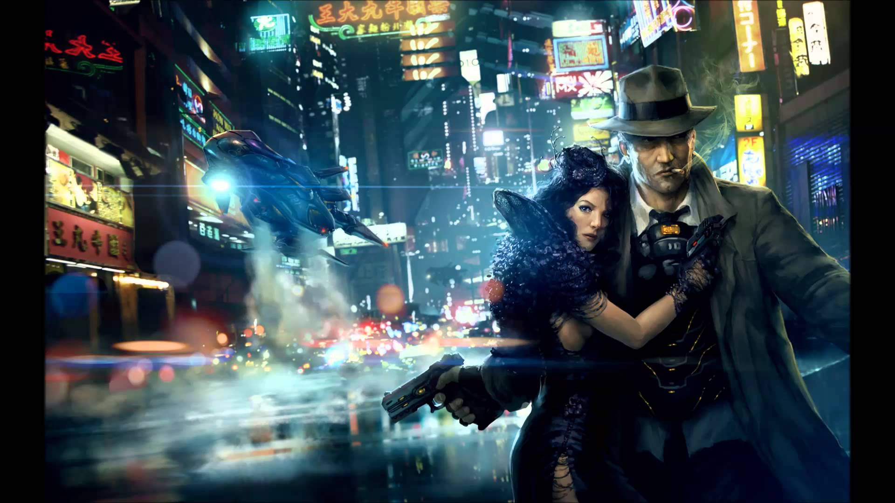

Results for 'cyber punk'
Titles
 Cyberpunk (1990) (Video)
Cyberpunk (1990) (Video)
Cyberpunk (1991) (TV Episode)
CyberPunk (TV Episode)
Names
Keywords
- cyber-punk (7 titles)
- cyberpunk (406 titles)
- pre-cyberpunk (2 titles)
Companies
- Cyberpunk Studios (Post Production Facilities)
- Cyberpunk Records [gb] (Distributor)